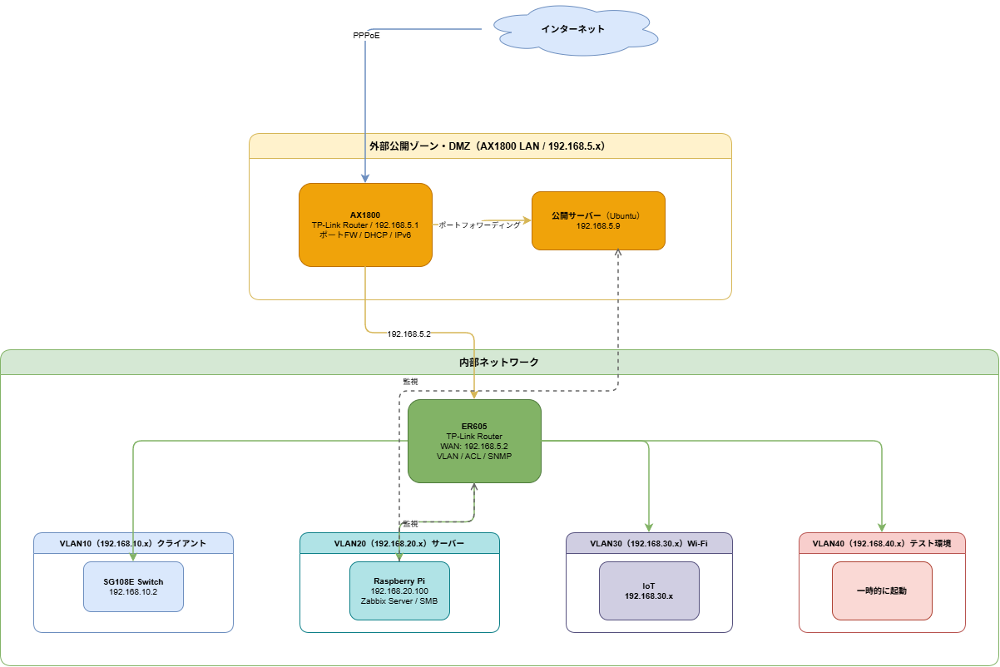

Qiita 記事
DMZ 分離と VLAN セグメント設計についてまとめた記事
公開準備中
Termnix-IT Portfolio
オンプレネットワークの設計や監視基盤の整備など、運用視点を持って手を動かしたプロジェクトをまとめています。構成図と手順を残し、あとから見返せる形で公開しています。
project-01 / on-premises
当初は自宅の Flask + Nginx でこの Web ページを公開していましたが、配信を AWS S3 + CloudFront へ移行したことに伴い、オンプレ側をネットワークから設計し直しました。上位ルータ AX1800 の配下に DMZ（192.168.5.x）を切って外部公開ホストを隔離し、内部は ER605 を境界に VLAN10（クライアント）／20（サーバ）／30（Wi-Fi・IoT）／40（テスト）へセグメント分割、ACL でゾーン間の通信を制御しています。
DMZ の Ubuntu では Minecraft サーバを運用しており、ポートフォワーディングで必要なポートのみを開放し、サーバ自体も使用するときだけ起動する運用にすることで、常時外部にさらす面を最小限に抑えています。テスト用の VLAN40 も同様に、検証時のみ立ち上げる構成としました。
DMZ 分離と VLAN セグメント設計についてまとめた記事
公開準備中
ネットワーク構成と公開サーバの設定ファイル
公開準備中

project-02 / monitoring
VLAN20（サーバセグメント）の Raspberry Pi 上に Zabbix Server を構築し、自宅環境の監視基盤として稼働させています。ER605 は SNMP で、DMZ の公開サーバはエージェント経由で監視し、セグメントをまたいだ死活・リソース状況を 1 か所で確認できるようにしました。同じ Raspberry Pi では SMB によるファイル共有も併用しています。
エージェント設定・SNMP 監視・通知の構築まとめ
公開準備中
Zabbix 構成の設定ファイル・手順
公開準備中
ER605（SNMP）／DMZ 公開サーバ（Zabbix Agent）／Raspberry Pi 自身を監視対象としています。ダッシュボードのスクリーンショットは追って掲載予定です。